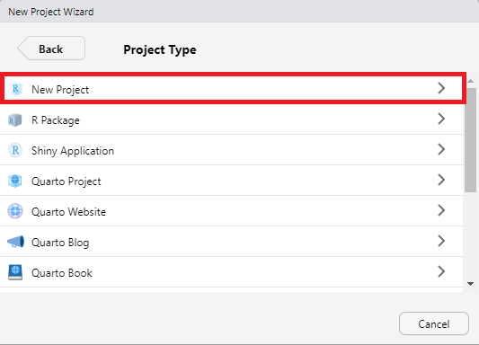
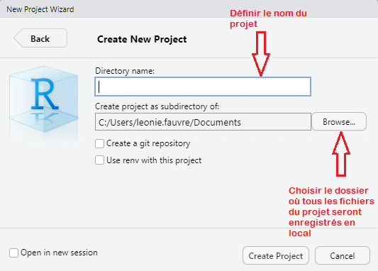
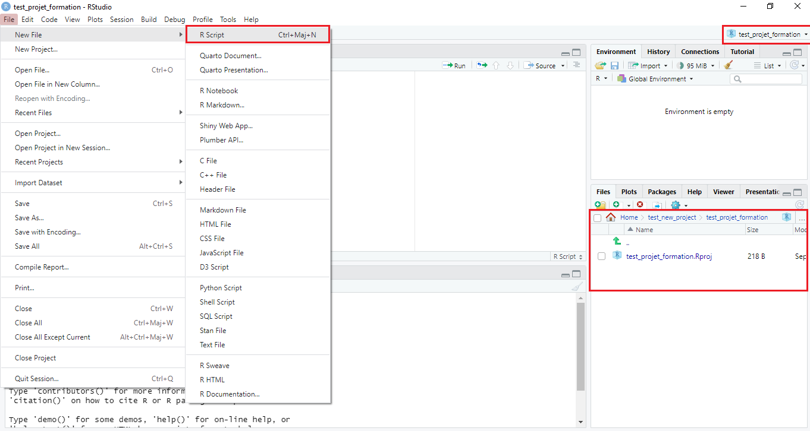
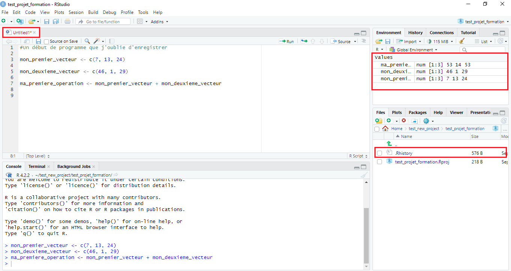
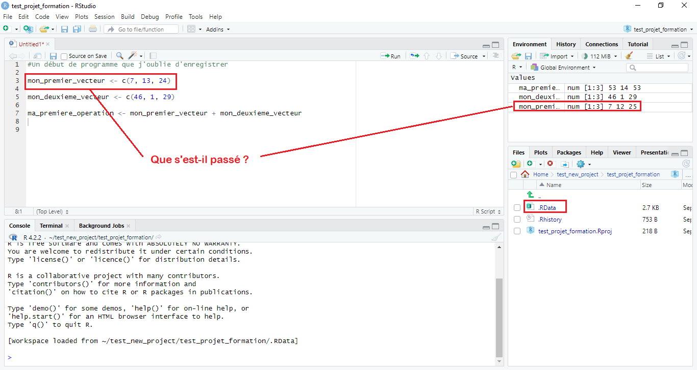
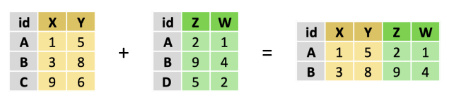
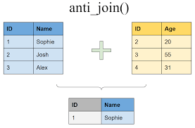
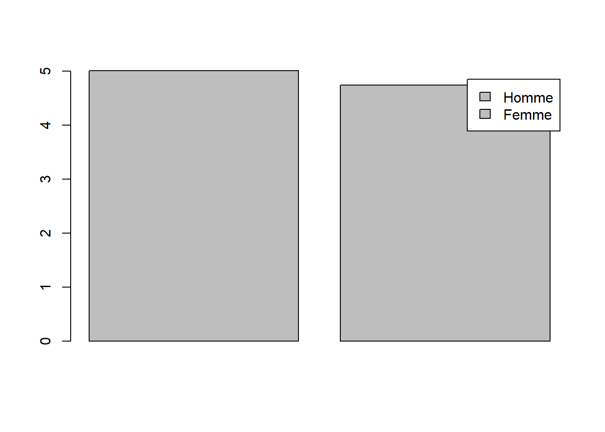
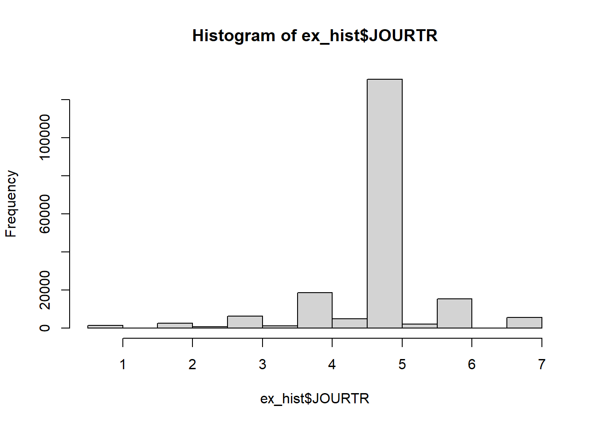

152/17Prise en main des données avec R
Un rapide tour de table pour apprendre à se connaître 🙂
Pourquoi R ?
- ⭐ Open source et gratuit ⭐
- 🌐 Harmonisation des langages au sein du SSP 🌐
- 📈 Analyse statistique avancée 📈
- 🌳 Vaste écosystème : extensions appelées “packages” (environ 20 000) 🌳
- 🤝 Communauté importante : facilités pour trouver de l’aide 🤝
Fonctionnement de R
R est un environnement et un langage de programmation
Langage interprété : plus proche de notre langage que du langage machine
Langage compilé : les commandes tapées sont exécutées directement
Langage objet : on assigne une valeur à quelque chose (
a <- 1). Le symbole<-désigne l’assignation. Les objets sont présents dans la mémoire vive de l’ordinateur (RAM) et l’assignation est une manière d’y avoir accès.
⛔Attention : le symbole = permet également l’assignation, mais c’est une très mauvaise pratique de l’utiliser comme tel. Le symbole = est utilisé de préférence pour renseigner la valeur des arguments des fonctions dans R. Vous pourrez néanmoins le rencontrer parfois comme manière d’assigner. ⛔
Les spécificités de R
Toutes les opérations sont enregistrées dans la mémoire vive de l’ordinateur (RAM) :
Cela peut poser des problèmes lors de la manipulation de données volumineuses.
En SAS, la mémoire RAM est sollicitée au minimum, des fichiers temporaires sont créés.
⛔Impossible de charger des données de 50GO avec un ordinateur ayant 32GO de RAM ⛔ Attention : R distingue les minuscules et les majuscules
Présentation de RStudio
RStudio est un environnement de développement gratuit, libre et multiplateforme pour R, un langage de programmation utilisé pour le traitement de données et l’analyse statistique.
La console
La console est un peu comme une calculatrice, elle exécute mais ne stocke pas :
Entrer les commandes
Afficher les résultats
Afficher les messages d’erreur
Ne stocke pas d’information
[1] 8.941176
L’environnement :
- Etat de la mémoire
- Répertoire des données (stockage des objets)
- Import de données en mode “clic-bouton”
test_environnement <- 1+1
Files, packages, help …
Obtenir le chemin à la racine de ma working directory :
getwd()La working directory est l’endroit où R lit et exporte par défaut les fichiers.
Fenêtre d’affichage des graphiques :
plot(100)Permet de voir les packages installés et chargés.
library("existepas")Permet également de les installer, les mettre à jour et les charger en clic bouton.
Permet d’accéder à la documentation des fonctions, ainsi qu’à des exemples. Par exemple, je ne comprends pas la fonction mean() :
help("mean")
#ou
?meanLa documentation de la fonction s’affiche dans la fenêtre Help.
Utiliser l’aide
Les fonctions des packages sont documentées (de manière inégale selon les packages…), et les arguments principaux de chaque fonction sont présentés dans l’aide, avec des exemples d’appel de la fonction.
Tip
Lorsqu’on appelle une fonction dans R, R détecte souvent automatiquement les arguments sans qu’on ait besoin de les nommer explicitement. Pour des raisons de lisibilité du code, il est recommandé de les nommer systématiquement.
un_vecteur <- c(2, 3 ,9 , 45, 10)
###Bonne pratique###
mean(x = un_vecteur)[1] 13.8###Mauvaise pratique###
mean(un_vecteur)[1] 13.8L’importance des packages
Pour installer un package dans la console, on utilise :
install.packages("dplyr")
Bonne pratique
Ne pas laisser dans un script R (un fichier de code) l’instruction install.packages(), car lors de la transmission d’un script, la personne peut l’exécuter par erreur alors que le package est déjà installé/à jour sur son poste de travail.
Cela permet de charger (ou mettre à jour) le package sur disque, depuis le CRAN. cette instruction nécessite donc une connexion à internet.
On charge ensuite le package en mémoire vive :
library("dplyr")L’installation du package n’est à exécuter qu’une seule fois
install.packages()permet aussi de récupérer une version mise à jour disponible sur le CRANLe chargement en mémoire vive (avec
library()) doit être effectué au début de chaque session ouverte de R pour avoir accès aux fonctionnalités du package.
Warning
⛔ Il existe un grand nombre de packages, mais certains sont DEPRECATED : leur utilisation n’est plus recommandée car ils ne sont plus mis à jour et entretenus. Pour assurer la pérennité d’un programme, (chaîne de production), il est recommandé de n’utiliser que des packages largemment utilisés, régulièrement mis à jour et recommandé par la communauté (sur UtilitR par exemple).⛔
library(dplyr)Warning: le package 'dplyr' a été compilé avec la version R 4.2.3
Attachement du package : 'dplyr'Les objets suivants sont masqués depuis 'package:stats':
filter, lagLes objets suivants sont masqués depuis 'package:base':
intersect, setdiff, setequal, unionTravailler avec les projets R Studio : qu’est-ce que c’est ?
Il est recommandé de regrouper les scripts et autres fichiers relatifs à un même “projet statistique” ou à une même chaîne de production à l’aide d’un projet RStudio.
Un projet RStudio permet de :
regrouper les programmes et autres types de documents d’un même projet ensemble ;
faciliter le suivi des modifcations, notamment avec git ;
favoriser la reproductibilité et la transmission des réglages liés à un projet statistique.
En pratique, c’est un fichier .Rproj dans un dossier qui contient les programmes et les documents d’un même projet statistique.
Travailler avec les projets R Studio : pourquoi ?
Il est recommandé de travailler systématiquement avec les projets RStudio. Un projet RStudio :
centralise les éléments d’un projet statistique et permet d’y avoir accès plus facilement avec les chemins relatifs : dans un programme, pour faire référence à un document du projet RStudio, il suffit de renseigner son nom car le répertoire de travail par défaut d’un projet est le dossier où se situe le fichier
.Rproj.améliore le travail collaboratif : le principe des chemins relatifs rend le projet statistique indépendant de l’arborescence de la machine sur laquelle il est hébergé, et permet de déplacer les fichiers plus facilement.
favorise la reproductibilité du projet statistique (ou de développement, d’un package par exemple). Il facilite également le travail avec Git. Il est facile de relier un projet RStudio à git pour travailler collaborativement.
Créer un projet
Pour créer un projet sur RStudio :
File > New projectIl est possible de le créer dans un nouveau dossier vide
New directoryou dans un dossier existantExisting directory.Il est également possible de le relier directement à git
Version Control.



Ouvrir un projet (source : UtilitR)
Lorsqu’on ouvre un projet RStudio :
une nouvelle session R s’ouvre ;
les sauvegardes de l’environnement sont ouvertes à partir du fichier
.RDatasi l’enregistrement a été activé (déconseillé) ;la working directory est automatiquement définie dans le dossier où se trouve le fichier
.Rproj;les documents ouverts au moment où le projet a été fermé pour la dernière fois sont restaurés, même s’ils n’avaient pas été sauvés.
Fermer un projet (voir UtilitR)
D’après la documentation UtilitR sur les bonnes pratiques :
Il est fortement conseillé de désactiver la sauvegarde du fichier .RData à la fermeture du projet. Pour ce faire, il faut aller dans Tools > Global Options et rester dans l’onglet General. Chercher Save workspace to .RData on exit:, et choisir l’option Never.
::: {.callout-tip title=“Bonne pratique”} Sauvegarder et recharger les données du projet avec le fichier .RData est une très mauvaise pratique en termes de reproductibilité. En effet, il se peut que les données sauvegardées dans le .RData aient subi des modifications non documentées (par exemple via la console), ou que les instructions présentes dans les scripts du projet n’aient pas été exécutées dans l’ordre. Dans ce cas, les données contenues dans le .RData peuvent ne pas être cohérentes avec le projet, et en les utilisant vous risquez de ne pas obtenir les résultats que vous voulez. :::
Fermer un projet (voir UtilitR)




Rédiger un programme R : les bonnes pratiques
Comme nous l’avons vu, la console ne permet pas de stocker un programme. Pour rédiger un programme réplicable, il faut créer un script R (fichier .R).
Cette formation vise à vous proposer quelques bonnes pratiques qui permettent la transmission des programmes R, notamment ceux des chaînes de production.
Ces bonnes pratiques sont inspirées de Chapitre 5 Boite à outils | Guide des bonnes pratiques en R à l’usage des statisticiens publics (utilitr.org).
Rédiger un programme R : les bonnes pratiques
Le nom des scripts R (fichiers .R) peut être préfixé par sa position dans la chaîne de production.
Le nom des scripts R peut être suffixé par le millésime de la production, en cas de changement par rapport à la dernière production et surtout en l’absence de versionage (git).
Il est préférable que le nom des objets (script, variable dans le programme, tableau de données…) ne contiennent pas de caractères spéciaux, d’accent et que les mots soient séparés par des underscores.
Pour le nom des variables et tables manipulées dans le code, il est recommandé d’utiliser des substantifs informatifs.
Dans l’appel d’une fonction, il est recommandé de nommer les arguments spécifiés explicitement, pour favoriser la réplicabilité et la compréhension pour le lecteur.
Il est recommandé de retourner régulièrement à la ligne pour rendre le code plus lisible.
L’indentation n’est pas automatique en R (contrairement à Python), il est recommandé d’indenter le code pour améliorer sa lisibilité. Le raccourci
CTRL + Ipermet de réindenter une sélection de lignes.Il est recommandé d’insérer des espaces entre les opérateurs : assignation
<-; comparaison<><=>===!=; opérations+-=.Pas d’espace avant ou après les parenthèses et crochets.
Il est recommandé de commenter le code. Un commentaire débute par
#et se termine à la fin de la ligne, contrairement à SAS où il est possible d’encadrer du texte pour le commenter entièrement.Le commentaire doit être clair et relativement court : il est préférable de bien nommer les objets de manière informative, ainsi que les arguments des fonctions.
Le script peut comporter des parties délimitées par des titres en commentaires.
Importer des données
EEC_2019 <- read.csv2("FD_EEC_2019.csv",
header = TRUE,
sep = ";",
quote = "\"",
dec = ".",
fill = TRUE,
comment.char = "")head(EEC_2019, 5) ANNEE TRIM CATAU2010R METRODOM TYPMEN7 AGE3 AGE5 COURED ENFRED NFRRED SEXE
1 2019 1 1 1 1 50 60 2 2 1 2
2 2019 2 1 1 3 50 60 1 2 1 1
3 2019 2 1 1 3 50 60 1 2 1 2
4 2019 3 1 1 3 50 60 1 2 1 1
5 2019 3 1 1 3 50 60 1 2 1 2
ACTEU ACTEU6 ACTIF ACTOP AIDFAM ANCCHOM ANCINACT CONTACT CREACCP DEM DISPOC
1 3 6 2 2 NA NA NA NA NA 0 NA
2 1 1 1 1 NA NA NA NA NA 0 NA
3 3 6 2 2 2 NA 8 NA NA 0 NA
4 1 1 1 1 NA NA NA NA NA 0 NA
5 3 6 2 2 2 NA 8 NA NA 0 NA
GARDEB HALOR INSCONT MRA MRB MRBBIS MRC MRD MRDBIS MRE MREC MRF MRG MRGBIS
1 NA 2 NA NA NA NA NA NA NA NA NA NA NA NA
2 NA 2 NA NA NA NA NA NA NA NA NA NA NA NA
3 NA 2 NA NA NA NA NA NA NA NA 2 NA NA NA
4 NA 2 NA NA NA NA NA NA NA NA NA NA NA NA
5 NA 2 NA NA NA NA NA NA NA NA 2 NA NA NA
MRH MRI MRJ MRK MRL MRM MRN MRO MRPASSA MRPASSB MRPASSC MRS NONDIC NREC NRECA
1 NA NA NA NA NA NA NA NA NA NA NA NA NA NA NA
2 NA NA NA NA NA NA NA NA NA NA NA NA NA NA NA
3 NA NA NA NA NA NA NA NA NA NA NA NA NA NA NA
4 NA NA NA NA NA NA NA NA NA NA NA NA NA NA NA
5 NA NA NA NA NA NA NA NA NA NA NA NA NA NA NA
NRECB OCCREF OFFICC OFFRE PASTRA PASTRB PASTRF PERCREV RABS RAISNREC RAISNSOU
1 NA 1 NA NA NA NA NA NA NA NA NA
2 NA 2 NA NA NA NA NA NA NA NA NA
3 NA 1 NA NA 2 2 2 NA NA NA 5
4 NA 2 NA NA 1 NA 1 1 8 NA NA
5 NA 1 NA NA 2 2 2 NA NA NA 5
RAISPAS SOU SOUA SOUB SOUC SOUSEMPL STCHE TEMP TRAREF TYPCONT TYPCONTB CHPUB
1 NA NA NA NA NA NA NA 2 NA NA NA NA
2 NA 2 2 2 NA NA NA NA 1 NA NA 1
3 NA 2 NA NA 2 NA NA NA 2 NA NA NA
4 NA 2 2 2 NA 3 NA NA 2 NA NA 1
5 NA 2 NA NA 2 NA NA NA 2 NA NA NA
CSE CSER CSP CSTOT CSTOTR FONCTC NAFG004UN NAFG010UN NAFG017UN NAFG021UN
1 NA NA NA 86 8 NA
2 64 6 64 64 6 NA EU FZ FZ F
3 NA NA NA 77 7 NA
4 64 6 64 64 6 NA EU FZ FZ F
5 NA NA NA 77 7 NA
NAFG038UN NAFG088UN PUB3FP QPRC STC RDET STAT2 STATOEP STATUT STATUTR TITC
1 NA NA NA NA NA NA NA NA NA NA
2 FZ 43 4 9 3 NA 2 35 35 5 NA
3 NA NA NA NA NA NA NA NA NA NA
4 FZ 43 4 9 3 NA 2 35 35 5 NA
5 NA NA NA NA NA NA NA NA NA NA
CSTMN CSTPLC DISPPLC DUHAB GARDEA HHC6 HORAIC RAISON RAISTP STMN STPLC TPPRED
1 NA NA NA NA NA NA NA NA NA NA NA NA
2 NA NA NA 1 NA 1 3 NA 5 2 2 2
3 NA NA NA NA NA NA NA NA NA NA NA NA
4 NA NA NA 1 NA 1 3 NA 5 2 2 2
5 NA NA NA NA NA NA NA NA NA NA NA NA
TXTPPRED ANCENTR4 SITANT AAC CSA NAFANT NAFANTG004N DIP11 CSTOTPRM IDENTM
1 NA NA NA 2 0 0 00 70 86 1
2 1 4 5 NA NA NA 50 64 2
3 NA NA NA 1 54 43 EU 70 64 2
4 1 4 5 NA NA NA 50 64 3
5 NA NA NA 1 54 43 EU 70 64 3
EXTRIAN EMPNBH HREC HHCE HPLUSA JOURTR NBTOTE
1 107.74972 NA NA NA NA NA NA
2 46.17385 1 NA 1 NA 1 NA
3 46.17385 NA NA NA NA NA NA
4 44.32930 0 NA 1 NA 1 NA
5 44.32930 NA NA NA NA NA NAlibrary("openxlsx")Warning: le package 'openxlsx' a été compilé avec la version R 4.2.3EEC_excel <- read.xlsx("FD_EEC_2019.xlsx")head(EEC_excel, 5) ANNEE TRIM CATAU2010R METRODOM TYPMEN7 AGE3 AGE5 COURED ENFRED NFRRED SEXE
1 2019 1 1 1 1 50 60 2 2 1 2
2 2019 2 1 1 3 50 60 1 2 1 1
3 2019 2 1 1 3 50 60 1 2 1 2
4 2019 3 1 1 3 50 60 1 2 1 1
5 2019 3 1 1 3 50 60 1 2 1 2
ACTEU ACTEU6 ACTIF ACTOP AIDFAM ANCCHOM ANCINACT CONTACT CREACCP DEM DISPOC
1 3 6 2 2 NA NA NA NA NA 0 NA
2 1 1 1 1 NA NA NA NA NA 0 NA
3 3 6 2 2 2 NA 8 NA NA 0 NA
4 1 1 1 1 NA NA NA NA NA 0 NA
5 3 6 2 2 2 NA 8 NA NA 0 NA
GARDEB HALOR INSCONT MRA MRB MRBBIS MRC MRD MRDBIS MRE MREC MRF MRG MRGBIS
1 NA 2 NA NA NA NA NA NA NA NA NA NA NA NA
2 NA 2 NA NA NA NA NA NA NA NA NA NA NA NA
3 NA 2 NA NA NA NA NA NA NA NA 2 NA NA NA
4 NA 2 NA NA NA NA NA NA NA NA NA NA NA NA
5 NA 2 NA NA NA NA NA NA NA NA 2 NA NA NA
MRH MRI MRJ MRK MRL MRM MRN MRO MRPASSA MRPASSB MRPASSC MRS NONDIC NREC NRECA
1 NA NA NA NA NA NA NA NA NA NA NA NA NA NA NA
2 NA NA NA NA NA NA NA NA NA NA NA NA NA NA NA
3 NA NA NA NA NA NA NA NA NA NA NA NA NA NA NA
4 NA NA NA NA NA NA NA NA NA NA NA NA NA NA NA
5 NA NA NA NA NA NA NA NA NA NA NA NA NA NA NA
NRECB OCCREF OFFICC OFFRE PASTRA PASTRB PASTRF PERCREV RABS RAISNREC RAISNSOU
1 NA 1 NA NA NA NA NA NA NA NA NA
2 NA 2 NA NA NA NA NA NA NA NA NA
3 NA 1 NA NA 2 2 2 NA NA NA 5
4 NA 2 NA NA 1 NA 1 1 8 NA NA
5 NA 1 NA NA 2 2 2 NA NA NA 5
RAISPAS SOU SOUA SOUB SOUC SOUSEMPL STCHE TEMP TRAREF TYPCONT TYPCONTB CHPUB
1 NA NA NA NA NA NA NA 2 NA NA NA NA
2 NA 2 2 2 NA NA NA NA 1 NA NA 1
3 NA 2 NA NA 2 NA NA NA 2 NA NA NA
4 NA 2 2 2 NA 3 NA NA 2 NA NA 1
5 NA 2 NA NA 2 NA NA NA 2 NA NA NA
CSE CSER CSP CSTOT CSTOTR FONCTC NAFG004UN NAFG010UN NAFG017UN NAFG021UN
1 NA NA NA 86 8 NA <NA> <NA> <NA> <NA>
2 64 6 64 64 6 NA EU FZ FZ F
3 NA NA NA 77 7 NA <NA> <NA> <NA> <NA>
4 64 6 64 64 6 NA EU FZ FZ F
5 NA NA NA 77 7 NA <NA> <NA> <NA> <NA>
NAFG038UN NAFG088UN PUB3FP QPRC STC RDET STAT2 STATOEP STATUT STATUTR TITC
1 <NA> NA NA NA NA NA NA NA NA NA NA
2 FZ 43 4 9 3 NA 2 35 35 5 NA
3 <NA> NA NA NA NA NA NA NA NA NA NA
4 FZ 43 4 9 3 NA 2 35 35 5 NA
5 <NA> NA NA NA NA NA NA NA NA NA NA
CSTMN CSTPLC DISPPLC DUHAB GARDEA HHC6 HORAIC RAISON RAISTP STMN STPLC TPPRED
1 NA NA NA NA NA NA NA NA NA NA NA NA
2 NA NA NA 1 NA 1 3 NA 5 2 2 2
3 NA NA NA NA NA NA NA NA NA NA NA NA
4 NA NA NA 1 NA 1 3 NA 5 2 2 2
5 NA NA NA NA NA NA NA NA NA NA NA NA
TXTPPRED ANCENTR4 SITANT AAC CSA NAFANT NAFANTG004N DIP11 CSTOTPRM IDENTM
1 NA NA NA 2 0 0 0 70 86 1
2 1 4 5 NA NA NA <NA> 50 64 2
3 NA NA NA 1 54 43 EU 70 64 2
4 1 4 5 NA NA NA <NA> 50 64 3
5 NA NA NA 1 54 43 EU 70 64 3
EXTRIAN EMPNBH HREC HHCE HPLUSA JOURTR NBTOTE
1 107.7497222 <NA> NA <NA> <NA> <NA> <NA>
2 46.173848259 1 NA 1 <NA> 1 <NA>
3 46.173848259 <NA> NA <NA> <NA> <NA> <NA>
4 44.329297911 0 NA 1 <NA> 1 <NA>
5 44.329297911 <NA> NA <NA> <NA> <NA> <NA>library("haven")
EEC_2019_SAS <- read_sas("FD_EEC_2019.sas7bdat")R : une logique vectorielle
L’élément de base de R est le vecteur c() :
un_vecteur_numerique <- c(2, 6, 8, 1)R utilise la logique de la vectorisation : les fonctions sont appliquées à l’ensemble d’un vecteur (ou matrice) plutôt que d’être appliquées successivement à chacun des éléments de ce vecteur (ou de cette matrice). Cela permet une accélération du temps de calcul.
Par exemple, pour obtenir le carré de chacun des éléments d’un vecteur :
x <- 1:10
for (k in seq_along(x)) {
x[k] <- x[k]**2
}Application de la fonction carrée au vecteur :
x <- 1:10
x <- x**2Les objets élémentaires et leurs types
Il existe deux types numériques en R :
les entiers ;
les flottants.
num <- 5
class(num)[1] "numeric"num <- integer(5)
class(num)[1] "integer"Une chaîne de caractère est délimitée par des quotes ou des doubles quotes. Il est recommandé d’utiliser les doubles quotes systématiquement.
Le nombre de caractères d’une chaîne de caractères est donné par la fonction nchar().
La fonction paste0() permet de concaténer des chaînes de caractères.
🔍Remarque : l’anti slash en R permet de gérer les caractères spéciaux, dans les chemins d’accès aux données, il faut donc soit les remplacer par des slashs, soit les doubler.🔍
#Création d'une chaîne de caractères
chaine <- "Oui"
#Type de la variable chaine
class(chaine)[1] "character"#Nombre de caractères de la variable
nchar(chaine)[1] 3#Concaténation de plusieurs chaînes de caractère
print(paste0("Les ", "chaînes ", "de caractère ", "peuvent être concaténées."))[1] "Les chaînes de caractère peuvent être concaténées."🔍Pour aller plus loin 🔍 le package stringr permet de traiter les chaînes de caractère : mettre en majuscules, mettre en minuscules, extraire une sous-chaîne…
Un booléen peut valoir TRUE ou FALSE : c’est une variable qui indique si une condition logique est vérifiée.
# Test de l'égalité
print(1 == 2)[1] FALSEa <- ("Dares" == "Dares")
print(a)[1] TRUE# Comparaison numérique
print(2 < 3)[1] TRUEprint(4 >= 5)[1] FALSEb <- 3 <= 2
print(b)[1] FALSE# Test de la différence
print("A" != "a")[1] TRUE❗ Attention : R est sensible à la casse ❗
Les structures de données de base en R
Un vecteur est une séquence ordonnée d’objets élémentaires de même type. Les vecteurs ont un type (correspondant à celui des objets qu’il contient) donné par la fonction class() et une longueur donnée par la fonction length.
vecteur_num <- c(3, 18, 9)
length(vecteur_num)[1] 3class(vecteur_num)[1] "numeric"Une liste est une séquence ordonnée, éventuellement hétérogène, d’objets de types quelconques.
Une liste est toujours de type list, peu importe ce qui la compose.
liste_divers <- list("A", 7, TRUE)
length(liste_divers)[1] 3class(liste_divers)[1] "list"#Accéder aux éléments d'une liste
print(liste_divers[[1]])[1] "A"Manipuler des données : les avantages de dplyr
Data frames
Le data.frame est un tableau sous forme d’une liste (classe list) de vecteurs qui représentent les colonnes. Les vecteurs doivent être de la même longueur, la longueur de chaque vecteur correspond au nombre de lignes/d’observations du tableau.
Puisque chaque colonne est un vecteur :
une colonne représente une variable d’un type unique ;
une colonne a un nom, celui de la variable ;
chaque colonne doit avoir la même hauteur.
Les dimensions du data.frame sont données par la fonction dim().
#Obtenir les dimensions du tableau de l'enquête emploi en continu
dim(EEC_2019)[1] 416298 124Opérations de base sur les data.frames : R base ou dplyr ?
👉 But : si vous rencontrez des syntaxes Rbase, les comprendre. Nous recommandons pour débuter d’utiliser plutôt les syntaxes dplyr présentées plus loin.
❓ Pourquoi ❓
La syntaxe de dplyr est à notre avis plus lisible et intuitive pour s’initier à R, et aussi largement utilisée par la communauté des utilisateurs de R, ce qui facilite le partage de solutions.
Note
Il n’existe pas une manière unique de programmer en R, et l’utilisation de Rbase présente aussi des avantages : la stabilité par exemple, la meilleure reproductibilité car nécessite moins de packages et de dépendances… Cette formation propose une manière de programme utilisant plutôt le tidyverse
Warning: le package 'forcats' a été compilé avec la version R 4.2.3Opérations de base sur les data.frames : R base
- Obtenir le nom des lignes :
rownames(EEC_ex) [1] "1" "2" "3" "4" "5" "6" "7" "8" "9" "10" "11" "12" "13" "14" "15"
[16] "16" "17" "18" "19" "20" "21" "22" "23" "24" "25" "26" "27" "28" "29" "30"- Sélectionner la 5ème ligne :
EEC_ex[5,] SEXE ACTIF COURED AGE5 CSTOTR NAFG004UN AGE3 ANNEE JOURTR
5 Femme 2 1 60 7 <NA> 50 2019 NA- Sélectionner les lignes 10 et 35 :
EEC_ex[c(10,35),] SEXE ACTIF COURED AGE5 CSTOTR NAFG004UN AGE3 ANNEE JOURTR
10 Homme 1 2 15 4 EV 15 2019 5
NA <NA> NA NA NA NA <NA> NA NA NA- Sélectionner les lignes 3 à 8 :
EEC_ex[c(3:8),] SEXE ACTIF COURED AGE5 CSTOTR NAFG004UN AGE3 ANNEE JOURTR
3 Femme 2 1 60 7 <NA> 50 2019 NA
4 Homme 1 1 60 6 EU 50 2019 1
5 Femme 2 1 60 7 <NA> 50 2019 NA
6 Homme 1 1 60 6 EU 50 2019 1
7 Femme 2 1 60 7 <NA> 50 2019 NA
8 Homme 1 1 40 4 ET 30 2019 5- Connaître le nom des colonnes/variables :
names(EEC_ex)[1] "SEXE" "ACTIF" "COURED" "AGE5" "CSTOTR" "NAFG004UN"
[7] "AGE3" "ANNEE" "JOURTR" - Sélectionner une colonne solution 1 : la 3ème colonne :
EEC_ex[, 3] [1] 2 1 1 1 1 1 1 1 1 2 2 2 2 2 2 2 2 2 2 2 2 1 1 1 1 1 1 1 1 1- Sélectionner une colonne solution 2, la variable ACTIF :
EEC_ex["ACTIF"] ACTIF
1 2
2 1
3 2
4 1
5 2
6 1
7 2
8 1
9 1
10 1
11 1
12 1
13 1
14 1
15 1
16 2
17 2
18 2
19 2
20 2
21 2
22 2
23 1
24 2
25 1
26 2
27 2
28 2
29 2
30 2- Sélectionner une colonne solution 3, la variable ACTIF
EEC_ex$ACTIF [1] 2 1 2 1 2 1 2 1 1 1 1 1 1 1 1 2 2 2 2 2 2 2 1 2 1 2 2 2 2 2- Connaître le type des variables :
class(EEC_ex$AGE3)[1] "integer"- Sélectionner la 3ème ligne et les colonnes SEXE et ACTIF :
EEC_ex[3, c("SEXE", "ACTIF")] SEXE ACTIF
3 Femme 2Opérations de base sur les data.frames : convertir des colonnes
Convertir une variable numérique en caractère :
class(EEC_ex$ANNEE)[1] "integer"EEC_ex$ANNEE <- as.character(EEC_ex$ANNEE)
class(EEC_ex$ANNEE)[1] "character"Convertir une colonne caractère en numérique :
EEC_ex$ANNEE <- as.numeric(EEC_ex$ANNEE)
class(EEC_ex$ANNEE)[1] "numeric"Les facteurs : un outil pour les variables qualitatives
Le type factor en R permet de manipuler des variables qualitatives.
Le package forcats permet de traiter les facteurs : recoder les modalités, les ordonner…
class(EEC_2019$SEXE)[1] "integer"#Conversion de la variable SEXE de numérique en facteur
EEC_2019$SEXE <- as.factor(EEC_2019$SEXE)
class(EEC_2019$SEXE)[1] "factor"La fonction levels() permet de connaître l’ensemble des modalités existantes d’un facteur (même si elles ne sont plus présentes dans les données après sélection des lignes).
levels(EEC_2019$SEXE)[1] "1" "2"La fonction fct_recode() permet de renommer les modalités d’un facteur, avec la syntaxe suivante :
nouvelle_variable <- fct_recode(ancienne_variable,
"Nouvelle_valeur1" = "Ancienne_valeur1",
"Nouvelle_valeur2" = "Ancienne_valeur2",
NULL = "Modalite_a_supprimer")Exemple : Recodage des modalités de la variable SEXE.
library(forcats)
EEC_2019$SEXE <- fct_recode(EEC_2019$SEXE,
"Homme" = "1",
"Femme" = "2")
levels(EEC_2019$SEXE)[1] "Homme" "Femme"Opérations de base sur les data.frames : les valeurs manquantes
Lorsqu’une valeur est manquante dans une enquête par exemple, elle figure sous forme de la modalité NA, “Not Available”, qui existe pour tous les types de variables.
Selon la manière dont ces valeurs manquantes existent dans les données à importer dans R, elles ne sont pas forcément détectées comme telles. Par exemple :
test_na <- as.data.frame(
list(
c(1, ".", 3),
c("A", "E", ".")
)
)
names(test_na) <- c("Var1", "Var2")
print(test_na) Var1 Var2
1 1 A
2 . E
3 3 .Il faut les recoder en NA avec la fonction fct_recode() :
test_na$Var1 <- as.factor(test_na$Var1)
test_na$Var1 <- fct_recode(test_na$Var1,
NULL = ".")
print(test_na) Var1 Var2
1 1 A
2 <NA> E
3 3 .Les dates sous R
Le format de date le plus courant en R est la classe Date. Elle correspond à une distance par rapport à une date origine, ce qui permet de faire des calculs (distance entre deux dates par exemple).
Il est possible de créer une date à partir d’une chaîne de caratère. Le format standard est “AAAA-MM-JJ”, mais il est possible de spécifier un autre format.
date_1 <- as.Date("2023-01-24")
date_2 <- as.Date("12/07/2022", format = "%d/%m/%Y")Le package lubridate permet de traiter les dates. Il n’est pas présenter davantage ici, voici simplement comment il est possible d’accéder aux composants d’une date avec lubridate :
library(lubridate)Warning: le package 'lubridate' a été compilé avec la version R 4.2.3
Attachement du package : 'lubridate'Les objets suivants sont masqués depuis 'package:base':
date, intersect, setdiff, unionyear(date_1)[1] 2023month(date_1)[1] 1quarter(date_1)[1] 1day(date_1)[1] 24Avec le type Date, vient la notion d’intervalle temporel, qui est également un type de données à part entière. La fonction interval() permet de calculer des durées.
library(lubridate)
date_1 <- as.Date("2023-01-24")
date_2 <- as.Date("12/07/2022", format = "%d/%m/%Y")
intervalle <- interval(date_1, date_2)
intervalle[1] 2023-01-24 UTC--2022-07-12 UTCclass(intervalle)[1] "Interval"
attr(,"package")
[1] "lubridate"Tidyverse, dplyr et le pipe
La majorité des utilisateurs de R utilisent un ensemble de package contenu dans le tidyverse , qui propose des fonctions alternatives à Rbase. Nous vous recommandons d’utiliser le tidyverse, et en particulier le package dplyr, pour rédiger vos programmes.
Avantages du tidyverse et de dplyr :
plus lisible, plus proche d’un langage interprété que R base ;
utilisé par la majorité des utilisateurs de R ;
stable.
library(tidyverse)Warning: le package 'tidyverse' a été compilé avec la version R 4.2.3Warning: le package 'ggplot2' a été compilé avec la version R 4.2.3Warning: le package 'tibble' a été compilé avec la version R 4.2.3Warning: le package 'tidyr' a été compilé avec la version R 4.2.3Warning: le package 'readr' a été compilé avec la version R 4.2.3Warning: le package 'purrr' a été compilé avec la version R 4.2.3Warning: le package 'stringr' a été compilé avec la version R 4.2.3── Attaching core tidyverse packages ──────────────────────── tidyverse 2.0.0 ──
✔ ggplot2 3.4.2 ✔ stringr 1.5.0
✔ purrr 1.0.1 ✔ tibble 3.2.1
✔ readr 2.1.4 ✔ tidyr 1.3.0
── Conflicts ────────────────────────────────────────── tidyverse_conflicts() ──
✖ dplyr::filter() masks stats::filter()
✖ dplyr::lag() masks stats::lag()
ℹ Use the conflicted package (<http://conflicted.r-lib.org/>) to force all conflicts to become errorsLe pipe
Pour enchaîner différentes instructions sur un data.frame, on utilise le “pipe” : %>%, un opérateur qui permet de prendre ce qu’il y a à gauche du pipe pour l’injecter en entrée (argument) dans la fonction à droite du pipe.
Attention : il est recommandé de définir un nouveau tableau pour enregistrer les opérations sur un data.frame.
Les bonnes pratiques de rédaction d’un code sont renseignées dans UtilitR - Les bonnes pratiques
Sélectionner des colonnes
Sélectionner des colonnes par leur nom avec select() :
#Les colonnes année et Age3
nouveau_df_1 <- EEC_ex %>%
select(ANNEE, AGE3)
head(nouveau_df_1, 5) ANNEE AGE3
1 2019 50
2 2019 50
3 2019 50
4 2019 50
5 2019 50Supprimer une colonne avec le - dans select() :
#Toutes les colonnes sauf Age3
nouveau_df_2 <- EEC_ex %>%
select(-AGE3)
head(nouveau_df_2, 5) SEXE ACTIF COURED AGE5 CSTOTR NAFG004UN ANNEE JOURTR
1 Femme 2 2 60 8 <NA> 2019 NA
2 Homme 1 1 60 6 EU 2019 1
3 Femme 2 1 60 7 <NA> 2019 NA
4 Homme 1 1 60 6 EU 2019 1
5 Femme 2 1 60 7 <NA> 2019 NAAfficher les premières lignes
Avant de débuter une analyse, il est utile de visualiser les premières lignes du tableau de données. C’est notamment très utile lorsque les données sont volumineuses et que l’affichage du tableau complet prend du temps.
EEC_debut <- EEC_ex %>%
head(5)
EEC_debut SEXE ACTIF COURED AGE5 CSTOTR NAFG004UN AGE3 ANNEE JOURTR
1 Femme 2 2 60 8 <NA> 50 2019 NA
2 Homme 1 1 60 6 EU 50 2019 1
3 Femme 2 1 60 7 <NA> 50 2019 NA
4 Homme 1 1 60 6 EU 50 2019 1
5 Femme 2 1 60 7 <NA> 50 2019 NAFiltrer des lignes
Pour filter des lignes selon une ou plusieurs conditions, on utilise la fonction filter() :
EEC_femme <- EEC_ex %>%
filter(SEXE == "Femme")
head(EEC_femme, 5) SEXE ACTIF COURED AGE5 CSTOTR NAFG004UN AGE3 ANNEE JOURTR
1 Femme 2 2 60 8 <NA> 50 2019 NA
2 Femme 2 1 60 7 <NA> 50 2019 NA
3 Femme 2 1 60 7 <NA> 50 2019 NA
4 Femme 2 1 60 7 <NA> 50 2019 NA
5 Femme 1 1 40 4 EV 30 2019 5EEC_moins_30 <- EEC_ex %>%
filter(AGE5 <= 30)
head(EEC_moins_30, 5) SEXE ACTIF COURED AGE5 CSTOTR NAFG004UN AGE3 ANNEE JOURTR
1 Homme 1 2 15 4 EV 15 2019 5
2 Femme 1 2 15 3 EV 15 2019 5
3 Homme 1 2 15 4 EV 15 2019 5
4 Femme 1 2 15 3 EV 15 2019 5
5 Homme 1 2 15 4 EV 15 2019 5EEC_hors_cadres <- EEC_ex %>%
filter(CSTOTR != 3)
head(EEC_hors_cadres, 5) SEXE ACTIF COURED AGE5 CSTOTR NAFG004UN AGE3 ANNEE JOURTR
1 Femme 2 2 60 8 <NA> 50 2019 NA
2 Homme 1 1 60 6 EU 50 2019 1
3 Femme 2 1 60 7 <NA> 50 2019 NA
4 Homme 1 1 60 6 EU 50 2019 1
5 Femme 2 1 60 7 <NA> 50 2019 NA#Opérateur ET
EEC_femme_moins_30 <- EEC_ex %>%
filter(SEXE == "femme" & AGE5 <= 30)
head(EEC_femme_moins_30, 5)[1] SEXE ACTIF COURED AGE5 CSTOTR NAFG004UN AGE3
[8] ANNEE JOURTR
<0 lignes> (ou 'row.names' de longueur nulle)#Opérateur OU
EEC_femme_ou_cadre <- EEC_ex %>%
filter(SEXE == "femme" | CSTOTR == 3)
head(EEC_femme_ou_cadre, 5) SEXE ACTIF COURED AGE5 CSTOTR NAFG004UN AGE3 ANNEE JOURTR
1 Femme 1 2 15 3 EV 15 2019 5
2 Femme 1 2 15 3 EV 15 2019 5
3 Femme 1 2 15 3 EV 15 2019 5
4 Homme 1 1 50 3 EV 50 2019 5
5 Homme 1 1 50 3 EV 50 2019 5Filtrer des lignes
EEC_hors_agr <- EEC_ex %>%
filter(NAFG004UN %in% c("ET", "EU", "EV"))
head(EEC_hors_agr, 5) SEXE ACTIF COURED AGE5 CSTOTR NAFG004UN AGE3 ANNEE JOURTR
1 Homme 1 1 60 6 EU 50 2019 1
2 Homme 1 1 60 6 EU 50 2019 1
3 Homme 1 1 60 6 EU 50 2019 1
4 Homme 1 1 40 4 ET 30 2019 5
5 Femme 1 1 40 4 EV 30 2019 5Pour tester si une valeur est manquante, il faut utiliser la fonction is.na(). Le test variable == NA renvoie une erreur.
Pour tester qu’une valeur est bien présente, c’est la condition !(is.na(variable)). la syntaxe !() signifie “différent de”, c’est-à-dire teste la condition contraire à ce qui est renseigné dans les parenthèses.
Uniquement les lignes pour lesquelles NAFG004UN est manquante :
EEC_CSP_na <- EEC_ex %>%
filter(is.na(NAFG004UN))
head(EEC_CSP_na, 5) SEXE ACTIF COURED AGE5 CSTOTR NAFG004UN AGE3 ANNEE JOURTR
1 Femme 2 2 60 8 <NA> 50 2019 NA
2 Femme 2 1 60 7 <NA> 50 2019 NA
3 Femme 2 1 60 7 <NA> 50 2019 NA
4 Femme 2 1 60 7 <NA> 50 2019 NA
5 Homme 2 2 60 7 <NA> 50 2019 NAUniquement les lignes pour lesquelles NAFG004UN est renseignée :
EEC_CSP_hors_na <- EEC_ex %>%
filter(!(is.na(NAFG004UN)))
head(EEC_CSP_hors_na, 5) SEXE ACTIF COURED AGE5 CSTOTR NAFG004UN AGE3 ANNEE JOURTR
1 Homme 1 1 60 6 EU 50 2019 1
2 Homme 1 1 60 6 EU 50 2019 1
3 Homme 1 1 60 6 EU 50 2019 1
4 Homme 1 1 40 4 ET 30 2019 5
5 Femme 1 1 40 4 EV 30 2019 5La fonction distinct() permet de ne sélectionner qu’une seule occurence de chaque combinaison des variables signalées.
On ne souhaite qu’une seule occurence de chaque combinaison existant dans les données des variables ANNEE et TRIM :
EEC_periode <- EEC_2019 %>%
distinct(ANNEE, TRIM)
head(EEC_periode, 5) ANNEE TRIM
1 2019 1
2 2019 2
3 2019 3
4 2019 4Créer une variable
if_else est utilisé pour renseigner une valeur si une condition est vérifiée, une autre sinon. La syntaxe est la suivante :
mutate(nouvelle_variable = if_else(condition, valeur_condition_verifiee, valeur_sinon))EEC_agr <- EEC_2019 %>%
mutate(agriculture = if_else(NAFG004UN == "ES", 1, 0))
head(EEC_agr, 5) ANNEE TRIM CATAU2010R METRODOM TYPMEN7 AGE3 AGE5 COURED ENFRED NFRRED SEXE
1 2019 1 1 1 1 50 60 2 2 1 Femme
2 2019 2 1 1 3 50 60 1 2 1 Homme
3 2019 2 1 1 3 50 60 1 2 1 Femme
4 2019 3 1 1 3 50 60 1 2 1 Homme
5 2019 3 1 1 3 50 60 1 2 1 Femme
ACTEU ACTEU6 ACTIF ACTOP AIDFAM ANCCHOM ANCINACT CONTACT CREACCP DEM DISPOC
1 3 6 2 2 NA NA NA NA NA 0 NA
2 1 1 1 1 NA NA NA NA NA 0 NA
3 3 6 2 2 2 NA 8 NA NA 0 NA
4 1 1 1 1 NA NA NA NA NA 0 NA
5 3 6 2 2 2 NA 8 NA NA 0 NA
GARDEB HALOR INSCONT MRA MRB MRBBIS MRC MRD MRDBIS MRE MREC MRF MRG MRGBIS
1 NA 2 NA NA NA NA NA NA NA NA NA NA NA NA
2 NA 2 NA NA NA NA NA NA NA NA NA NA NA NA
3 NA 2 NA NA NA NA NA NA NA NA 2 NA NA NA
4 NA 2 NA NA NA NA NA NA NA NA NA NA NA NA
5 NA 2 NA NA NA NA NA NA NA NA 2 NA NA NA
MRH MRI MRJ MRK MRL MRM MRN MRO MRPASSA MRPASSB MRPASSC MRS NONDIC NREC NRECA
1 NA NA NA NA NA NA NA NA NA NA NA NA NA NA NA
2 NA NA NA NA NA NA NA NA NA NA NA NA NA NA NA
3 NA NA NA NA NA NA NA NA NA NA NA NA NA NA NA
4 NA NA NA NA NA NA NA NA NA NA NA NA NA NA NA
5 NA NA NA NA NA NA NA NA NA NA NA NA NA NA NA
NRECB OCCREF OFFICC OFFRE PASTRA PASTRB PASTRF PERCREV RABS RAISNREC RAISNSOU
1 NA 1 NA NA NA NA NA NA NA NA NA
2 NA 2 NA NA NA NA NA NA NA NA NA
3 NA 1 NA NA 2 2 2 NA NA NA 5
4 NA 2 NA NA 1 NA 1 1 8 NA NA
5 NA 1 NA NA 2 2 2 NA NA NA 5
RAISPAS SOU SOUA SOUB SOUC SOUSEMPL STCHE TEMP TRAREF TYPCONT TYPCONTB CHPUB
1 NA NA NA NA NA NA NA 2 NA NA NA NA
2 NA 2 2 2 NA NA NA NA 1 NA NA 1
3 NA 2 NA NA 2 NA NA NA 2 NA NA NA
4 NA 2 2 2 NA 3 NA NA 2 NA NA 1
5 NA 2 NA NA 2 NA NA NA 2 NA NA NA
CSE CSER CSP CSTOT CSTOTR FONCTC NAFG004UN NAFG010UN NAFG017UN NAFG021UN
1 NA NA NA 86 8 NA
2 64 6 64 64 6 NA EU FZ FZ F
3 NA NA NA 77 7 NA
4 64 6 64 64 6 NA EU FZ FZ F
5 NA NA NA 77 7 NA
NAFG038UN NAFG088UN PUB3FP QPRC STC RDET STAT2 STATOEP STATUT STATUTR TITC
1 NA NA NA NA NA NA NA NA NA NA
2 FZ 43 4 9 3 NA 2 35 35 5 NA
3 NA NA NA NA NA NA NA NA NA NA
4 FZ 43 4 9 3 NA 2 35 35 5 NA
5 NA NA NA NA NA NA NA NA NA NA
CSTMN CSTPLC DISPPLC DUHAB GARDEA HHC6 HORAIC RAISON RAISTP STMN STPLC TPPRED
1 NA NA NA NA NA NA NA NA NA NA NA NA
2 NA NA NA 1 NA 1 3 NA 5 2 2 2
3 NA NA NA NA NA NA NA NA NA NA NA NA
4 NA NA NA 1 NA 1 3 NA 5 2 2 2
5 NA NA NA NA NA NA NA NA NA NA NA NA
TXTPPRED ANCENTR4 SITANT AAC CSA NAFANT NAFANTG004N DIP11 CSTOTPRM IDENTM
1 NA NA NA 2 0 0 00 70 86 1
2 1 4 5 NA NA NA 50 64 2
3 NA NA NA 1 54 43 EU 70 64 2
4 1 4 5 NA NA NA 50 64 3
5 NA NA NA 1 54 43 EU 70 64 3
EXTRIAN EMPNBH HREC HHCE HPLUSA JOURTR NBTOTE agriculture
1 107.74972 NA NA NA NA NA NA 0
2 46.17385 1 NA 1 NA 1 NA 0
3 46.17385 NA NA NA NA NA NA 0
4 44.32930 0 NA 1 NA 1 NA 0
5 44.32930 NA NA NA NA NA NA 0case_when permet de créer une variable qui prend différentes modalités selon plusieurs conditions évaluées successivement, selon la syntaxe suivante :
mutate(nouvelle_variable = case_when(condition1 ~ valeur1,
condition2 ~ valeur2,
condition3 ~ valeur3,
TRUE ~ valeur_par_défaut))Les conditions sont explorées successivement jusqu’à ce qu’une d’entre elles donne TRUE, elles ne sont donc pas nécessairement exclusives l’une de l’autre. La dernière ligne « voiture balai » (qui n’est pas obligatoire) exploite cette fonctionnalité avec une condition toujours vraie qui piège tous les cas non explorés.
ll est également possible de créer directement une variable de type booléen en mentionnat uniquement la condition :
mutate(individu_cadre = (CSTOTR == 3))La nouvelle variable individu_cadre vaut TRUE lorsque CSTOTR vaut 3, FALSE sinon.
Modifier des variables
rename(nouveau_nom_var1 = ancien_nom_var1,
nouveau_nom_var2 = ancien_nom_var2)EEC_2 <- EEC_ex %>%
rename(AGE_3_classes = AGE3)
head(EEC_2, 5) SEXE ACTIF COURED AGE5 CSTOTR NAFG004UN AGE_3_classes ANNEE JOURTR
1 Femme 2 2 60 8 <NA> 50 2019 NA
2 Homme 1 1 60 6 EU 50 2019 1
3 Femme 2 1 60 7 <NA> 50 2019 NA
4 Homme 1 1 60 6 EU 50 2019 1
5 Femme 2 1 60 7 <NA> 50 2019 NAAvec cut(), la borne inférieure est exclue, la borne supérieure est incluse.
EEC_3 <- EEC_ex %>%
mutate(JOURTR_classe = cut(JOURTR, breaks = c(2,4)))
head(EEC_3, 5) SEXE ACTIF COURED AGE5 CSTOTR NAFG004UN AGE3 ANNEE JOURTR JOURTR_classe
1 Femme 2 2 60 8 <NA> 50 2019 NA <NA>
2 Homme 1 1 60 6 EU 50 2019 1 <NA>
3 Femme 2 1 60 7 <NA> 50 2019 NA <NA>
4 Homme 1 1 60 6 EU 50 2019 1 <NA>
5 Femme 2 1 60 7 <NA> 50 2019 NA <NA>Convertir des variables
Les fonctions de conversion peuvent être appliquées aux colonnes d’un data.frame. Il est conseillé d’affecter à chaque variable le type le plus proche de sa nature :
#Conversion de la variable ENFRED en facteur et de la variable COURED en caractères :
EEC_2019 <- EEC_2019 %>%
mutate(ENFRED = as.factor(ENFRED),
COURED = as.character(COURED))🤔 Comment recoder ? 🤔
transformer les variables qualitatives en facteurs ;
ordonner les modalités pour les variables qualitatives ordinales ;
convertir les variables numériques en numérique ;
recoder les valeurs manquantes (par exemple les caractères vides) ;
transformer les chaînes de caractère en Date si nécessaire.
❓ Pourquoi recoder ❓
pour réaliser des statistiques descriptives plus rapidement, par exemple avec la fonction summary ;
pour que les fonctions économétriques détectent une modalité de référence pertinente pour les variables ordinales ;
pour tracer des séries temporelles dans le cas des dates…
Statistiques descriptives
🧰 La boite à outil du statisticien :
La fonction COUNT
- Connaitre le nombre de lignes d’un dataframe
- On peut également avoir cette information dans le panneau “environnement”
- Compter le nombre d’individus dans une table exhaustive
- ⛔ Ne pas utiliser pour des données échantillonées ⛔
Ne pas calculer par exemple le nombre de chômeurs au sens du BIT sans pondération à partir de l’EEC :
chomeurs <- EEC_2019 %>%
filter(ACTEU == "2") %>%
count()
print(paste0("Le nombre de chômeurs au sens du BIT N'EST PAS ", as.character(chomeurs)))[1] "Le nombre de chômeurs au sens du BIT N'EST PAS 18602"La fonction summarise
Cette fonction permet d’avoir un ensemble de statistiques descriptives : effectif, somme, moyenne, médiane, quantile, min, max…
Elle est fréquemment utilisée avec l’instruction group_by(), qui permet d’effectuer ces calculs au sein des groupes formés par les modalités d’une variable.
Tip
Pour les habitués de SQL, group_by n’est pas un mot clé mais une vraie fonction R avec une entrée et une sortie. Le résultat est une table avec les mêmes données mais un « index » en plus disant où sont les observations de chaque modalité. La présence de cet index change le fonctionnement de plusieurs fonctions de dplyr en les forçant à travailler par morceau.
La fonction summarise
La fonction n() permet d’obtenir les effectifs.
Calcul du nombre de personnes de 30 ans ou moins :
eff_moins_30 <- EEC_2019 %>%
filter(AGE3 <= 30) %>%
summarise(eff_moins_30 = n())
eff_moins_30 eff_moins_30
1 195851Calcul du nombre de personnes par classe d’âge en 3 classes :
eff_age_classe <- EEC_2019 %>%
group_by(AGE3) %>%
summarise(eff_age3 = n())
eff_age_classe# A tibble: 3 × 2
AGE3 eff_age3
<int> <int>
1 15 78826
2 30 117025
3 50 220447Calcul du nombre de personnes par SEXE :
eff_sexe <- EEC_2019 %>%
group_by(SEXE) %>%
summarise(eff_sexe = n())
eff_sexe# A tibble: 2 × 2
SEXE eff_sexe
<fct> <int>
1 Homme 196098
2 Femme 220200Les fonctions sum() et mean() peuvent être utilisées également avec summarise().
Warning
Tout calcul impliquant un NA restitue un NA : les opérations, les tests, les tris. Dans les calculs statistiques (par exemple avec les fonctions appelées par le summarise de dplyr utilisé pour faire des récapitulations : comptages, totaux ou autres statistiques), il y a généralement un argument supplémentaire na.rm (pour “remove”) qui permet de ne pas tenir compte des valeurs manquantes, mais son positionnement par défaut est souvent à “faux” (FALSE, ne pas enlever les valeurs manquantes du calcul).
⚠️ ATTENTION ⚠️ Les valeurs manquantes sont le principal point d’incompatibilité avec SAS et leur traitement nécessite de redoubler d’attention quand on convertit un programme car le fonctionnement est radicalement différent en R.
Calcul de la moyenne du nombre de jours travaillés par semaine par sexe :
EEC_jourtr_sexe <- EEC_2019 %>%
group_by(SEXE) %>%
summarise(moy_jour_tr = mean(JOURTR, na.rm = TRUE))
EEC_jourtr_sexe# A tibble: 2 × 2
SEXE moy_jour_tr
<fct> <dbl>
1 Homme 5.01
2 Femme 4.74summarise() est également utile pour des statistiques de distribution.
Calcul de statistiques de distribution du nombre de jours travaillés par semaine par classe d’âge :
EEC_jourtr_age <- EEC_2019 %>%
group_by(AGE3) %>%
summarise(min_jour_tr = min(JOURTR, na.rm = TRUE),
q1_jour_tr = quantile(JOURTR, na.rm = TRUE, probs = 0.25),
med_jour_tr = median(JOURTR, na.rm = TRUE),
q3_jour_tr = quantile(JOURTR, na.rm = TRUE, probs = 0.75),
max_jour_tr = max(JOURTR, na.rm = TRUE))
EEC_jourtr_age# A tibble: 3 × 6
AGE3 min_jour_tr q1_jour_tr med_jour_tr q3_jour_tr max_jour_tr
<int> <dbl> <dbl> <dbl> <dbl> <dbl>
1 15 0.5 5 5 5 7
2 30 0.5 5 5 5 7
3 50 0.5 5 5 5 7Il est possible de renseigner plusieurs variables dans l’instruction group_by(). Les statistiques demandées dans summarise() sont alors calculées au sein de chaque classe formée par le croisement des modalités des deux variables.
⚠️ ATTENTION ⚠️ la valeur par défaut de l’argument drop_last de la fonction summarise() est TRUE, ce qui implique que le dernier niveau de regroupement (la dernière variable renseignée dans le group_by()) est supprimé à l’issue de l’application de la fonction summarise(). Un warning le précise dans la console lorsque cette fonction est utilisée avec plusieurs variables de regroupement.
Calcul de la moyenne de jours travaillés par semaine par groupe de sexe croisé avec l’âge en 3 classes :
EEC_jourtr_sexe_age <- EEC_2019 %>%
group_by(SEXE, AGE3) %>%
summarise(moy_jour_tr = mean(JOURTR, na.rm = TRUE))`summarise()` has grouped output by 'SEXE'. You can override using the
`.groups` argument.EEC_jourtr_sexe_age# A tibble: 6 × 3
# Groups: SEXE [2]
SEXE AGE3 moy_jour_tr
<fct> <int> <dbl>
1 Homme 15 4.94
2 Homme 30 5.02
3 Homme 50 5.02
4 Femme 15 4.71
5 Femme 30 4.76
6 Femme 50 4.73Regrouper par catégorie
L’opérateur pipe %>% permet d’enchaîner les opérations sur une table de données.
Il faut faire attention à cet enchaînement lorsqu’on utilise l’instruction group_by. Cette instruction peut être utilisée avec d’autres fonctions de dplyr (filter() et mutate() par exemple), mais elle ne se comporte pas de la même manière avec toutes les fonctions. En effet, le dernier niveau de regroupement (la dernière variable renseignée dans le group_by()) est supprimé à l’issue de l’application de la fonction summarise(), tandis que ce n’est pas le cas avec les fonctions mutate() et filter().
Ainsi, il est possible d’utiliser l’instruction ungroup() pour remédier au regroupement des observations dans la suite des opérations sur la table.
ex_plusieurs_gpes <- EEC_2019 %>%
group_by(SEXE, AGE3) %>%
mutate(moy_jour_tr = mean(JOURTR, na.rm = TRUE)) %>%
ungroup() %>%
distinct(SEXE, moy_jour_tr, AGE3) %>%
group_by(SEXE) %>%
filter(moy_jour_tr == min(moy_jour_tr))
ex_plusieurs_gpes# A tibble: 2 × 3
# Groups: SEXE [2]
SEXE moy_jour_tr AGE3
<fct> <dbl> <int>
1 Homme 4.94 15
2 Femme 4.71 15Trier ses données
Lorsqu’on utilise un regroupement, le résultat est trié en majeur selon ce regroupement. Si on souhaite effectuer un autre tri, il faut déclencher le tri avec la fonction arrange(). Le mot clé desc (malgré la syntaxe, ce n’est pas une fonction) permet de trier par ordre décroissant. Il est possible d’utiliser plusieurs colonnes pour le tri.
👁️🗨️ REMARQUE 👁️🗨️ Contrairement à SAS où trier est la procédure la plus utilisée, R se charge de lui même de faire les tris dont il pourrait avoir besoin. Trier n’a généralement un sens que pour organiser la présentation de résultats.
ex_arrange <- EEC_2019 %>%
select(SEXE, AGE3, JOURTR) %>%
group_by(SEXE, AGE3) %>%
summarise(moy_jour_tr = mean(JOURTR, na.rm = TRUE)) %>%
arrange(moy_jour_tr)`summarise()` has grouped output by 'SEXE'. You can override using the
`.groups` argument.ex_arrange# A tibble: 6 × 3
# Groups: SEXE [2]
SEXE AGE3 moy_jour_tr
<fct> <int> <dbl>
1 Femme 15 4.71
2 Femme 50 4.73
3 Femme 30 4.76
4 Homme 15 4.94
5 Homme 50 5.02
6 Homme 30 5.02REMARQUE : Contrairement à SAS où trier est la procédure la plus utilisée, R se charge de lui même de faire les tris dont il pourrait avoir besoin. Trier n’a généralement un sens que pour organiser la présentation de résultats.
Connaitre le numéro de ligne
La fonction row_number() permet de connaître l’ordre de classement de l’observation dans la table.
Les fonctions first() et last() permettent de récupérer respectivement la première et la dernière observation d’un groupe.
ex_arrange_2 <- EEC_2019 %>%
select(SEXE, AGE3, JOURTR) %>%
group_by(SEXE, AGE3) %>%
summarise(moy_jour_tr = mean(JOURTR, na.rm = TRUE)) %>%
arrange(moy_jour_tr) %>%
mutate(numero = row_number())`summarise()` has grouped output by 'SEXE'. You can override using the
`.groups` argument.ex_arrange_2# A tibble: 6 × 4
# Groups: SEXE [2]
SEXE AGE3 moy_jour_tr numero
<fct> <int> <dbl> <int>
1 Femme 15 4.71 1
2 Femme 50 4.73 2
3 Femme 30 4.76 3
4 Homme 15 4.94 1
5 Homme 50 5.02 2
6 Homme 30 5.02 3Travailler avec des données pondérées
Le package Hmisc permet de traiter des données pondérées.
Des fonctions utilisant des pondérations se trouvent dans le package Hmisc, elles utilisent un argument supplémentaire weights qui permet de passer la colonne contenant les pondérations. Il s’agit de :
wtd.mean: la moyennewtd.var: la variance (en déduire l’écart type si besoin)wtd.quantile: un quantile, plusieurs algorithmes sont implémentés, mais aucun ne correspond à ce que fait SAS.
df <- data.frame(age = c(20, 30, 40, 50, 60), poids=c(1, 1, 1, 1, 3))
library(Hmisc)Warning: le package 'Hmisc' a été compilé avec la version R 4.2.3
Attachement du package : 'Hmisc'Les objets suivants sont masqués depuis 'package:dplyr':
src, summarizeLes objets suivants sont masqués depuis 'package:base':
format.pval, unitsnew_df <- df %>%
summarise(quartile1 = wtd.quantile(age,w=poids,probs=.25),
mediane = wtd.quantile(age,w=poids,probs=.5),
moyenne = wtd.mean(age,w=poids))Concaténations
Mettre les lignes d’une table derrière les lignes d’une autre : la fonction bind_rows()
Les deux listes de colonnes peuvent ne pas être strictement identiques : les données ne sont mises bout à bout que si les noms des colonnes coïncident, sinon des valeurs manquantes sont générées.
Les colonnes peuvent être dans un ordre différent dans les deux tables, la fonction se charge de les réordonner.
Par contre une colonne de même nom doit avoir le même type dans les deux tables ou la concaténation ne se fait pas.
Mettre les colonnes d’une table à coté des colonnes d’une autre : la fonction bind_cols().
Le nombre de lignes doit coïncider dans les deux tables : c’est un garde-fou contre les erreurs de manipulation, car la fonction ne réalise pas une jointure mais une simple juxtaposition.
L’usage de cette fonction est donc plus rare et limité aux situations où on est absolument sûr d’avoir le bon nombre de lignes et des données qui sont rangées de la même façon dans les deux tables.
Jointures
table_jointe <- table_1 %>%
left_join(table_2, by = c("var1_table1" = "var2_table2",
"var3_table1" = "var4_table2"))
table_jointe <- table_1 %>%
inner_join(table_2, by = c("var1_table1" = "var2_table2",
"var3_table1" = "var4_table2"))
table_jointe <- table_1 %>%
full_join(table_2, by = c("var1_table1" = "var2_table2",
"var3_table1" = "var4_table2"))
Pour récupérer les observations de la table de gauche qui sont absentes de la table de droite.
table_jointe <- table_1 %>%
anti_join(table_2, by = c("var1_table1" = "var2_table2",
"var3_table1" = "var4_table2"))
Transpositions
Pour pivoter des données, il est possible d’utiliser les fonctions pivot_longer() et pivot_wider() du package tidyr.
Par exemple, pour la fonction pivot_longer(), la syntaxe est la suivante : pivot_longer(cols = c("Var_1_pivotee", "Var_2_pivotee"), names_to = c("nom_de_la_nouvelle_colonne"))
library(tidyr)
ex_pivot <- EEC_2019 %>%
select(SEXE, AGE3, JOURTR) %>%
group_by(SEXE, AGE3) %>%
summarise(moy_jour_tr = mean(JOURTR, na.rm = TRUE),
med_jour_tr = median(JOURTR, na.rm = TRUE)) %>%
ungroup() %>%
pivot_longer(cols = c("moy_jour_tr", "med_jour_tr"), names_to = c("indicateur"))`summarise()` has grouped output by 'SEXE'. You can override using the
`.groups` argument.ex_pivot# A tibble: 12 × 4
SEXE AGE3 indicateur value
<fct> <int> <chr> <dbl>
1 Homme 15 moy_jour_tr 4.94
2 Homme 15 med_jour_tr 5
3 Homme 30 moy_jour_tr 5.02
4 Homme 30 med_jour_tr 5
5 Homme 50 moy_jour_tr 5.02
6 Homme 50 med_jour_tr 5
7 Femme 15 moy_jour_tr 4.71
8 Femme 15 med_jour_tr 5
9 Femme 30 moy_jour_tr 4.76
10 Femme 30 med_jour_tr 5
11 Femme 50 moy_jour_tr 4.73
12 Femme 50 med_jour_tr 5 L’article Les pivots expliqués à ma fille est particulièrement bien fait sur le sujet.
Graphiques avec plot
Voici une présentation succinte de quelques fonctions usuelles de Rbase permettant de faire des graphiques :
ex_barplot <- EEC_2019 %>%
select(SEXE, JOURTR) %>%
group_by(SEXE) %>%
summarise(moy_jour_tr = mean(JOURTR, na.rm = TRUE))
barplot(ex_barplot$moy_jour_tr, legend.text = ex_barplot$SEXE)
ex_hist <- EEC_2019 %>%
select(JOURTR)
hist(ex_hist$JOURTR)
data(iris)
plot(x = iris$Sepal.Length, y = iris$Sepal.Width)
Ressources sur ggplot2
Le package ggplot2 permet de créer des graphiques très souplement, en modifiant une grande partie des paramètres. Il ne fait pas l’objet d’une présentation ici, mais pour s’y former, la fiche UtilitR sur le sujet UtilitR-Ggplot2 , ainsi que le site R-graph-gallery vous sont recommandés.
Enfin, pour avoir des recommandations sur les différents types de visualisation possibles selon la nature des variables à représenter, le site From Data to Viz est très utile.
Exporter des données
Pour l’exportation de données au format xlsx, le package openxlsx est à privilégier car il présente de multiples options très pratiques pour personnaliser les exports.
Les deux vignettes du package sur ce sujet apportent quelques exemples des potentialités d’écriture de classeurs xlsx. La première présente notamment l’utilisation de la fonction write.xlsx() et la seconde illustre quelques possibilités autour de la fonction writeData().
library(dplyr)
eff_par_age <- EEC_2019 %>%
group_by(AGE3) %>%
summarise(eff_par_age = n())
eff_par_age# A tibble: 3 × 2
AGE3 eff_par_age
<int> <int>
1 15 78826
2 30 117025
3 50 220447library(openxlsx)
write.xlsx(eff_par_age, file = "mon_export.xlsx", asTable = TRUE)eff_par_age <- EEC_2019 %>%
group_by(AGE3) %>%
summarise(eff_par_age = n())
eff_par_age# A tibble: 3 × 2
AGE3 eff_par_age
<int> <int>
1 15 78826
2 30 117025
3 50 220447write.csv(x = eff_par_age, file = "monFichier.csv")Pour exporter un graphique :
png(filename = "mon_graphique.png", width = 500, height = 300)
hist(EEC_2019$JOURTR)
dev.off()png
2 Aide pour R
cheatsheets disponibles sur UtilitR à avoir en local
utilitR
stackoverflow
issues github sur le sujet
forums internes : tchap Outils Stats v2, Langage R, Dares entraide Git et R
vos collègues
nous
des ateliers thématiques